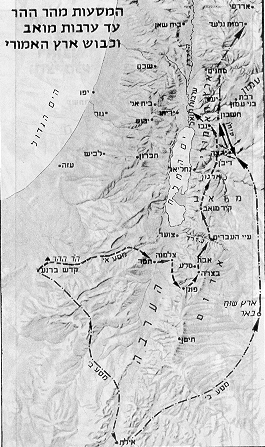

קוד: תשעה באב וילדיו של לוט בתנ"ך
סוג: כלל
מאת: הרב עת-שלום
אל: אתר torah.org
[שיעור לפרשת דברים]
זהו תרגום לעברית של המאמר:
Parashat D'varim:Tish'ah b'Av and the Children of Lot
מאת ר' יצחק עת-שלום, מנהל torah.org
תורגם ע"י זאב שקרוב, airwolf103@hotmail.com
למרות שההתייחסות המוקדמת ביותר שיש לנו על מנהגי אבלות בחודש אב, מגיעה מתקופת חורבן בית-ראשון בשנת 586 לפנה"ס (ראו זכריה ז:ג), המסורת מתארכת את האופי הטראגי של החודש – ובמיוחד של תשעה באב – עד לדור יוצאי-מצרים.
בתשעה באב:
חז"ל קישרו את הטרגדיה הראשונה שחלה בתשעה באב עם הגזירה שקיבל דור יוצאי מצרים, למות במדבר ולא להיכנס לארץ. יתרה מכך, חז"ל יודעים לספר שהגזירה האלוקית הוצאה לפועל כל שנה בתשעה באב:
"ערב תשעה באב כל אותן השנים שהיו ישראל במדבר היה משה מוציא כרוז בכל המחנה ואומר: צאו לחפור, צאו לחפור! והיו יוצאים וחופרים להם קברות ולנים בהם. בשחרית היה כרוז יוצא ומכריז: ייבדלו החיים מן המתים! היו עומדים ומוצאים עצמם חסרים חמישה עשר אלף." (ראו תל' ירושלמי 4:7 – וגם את הספורנו על במדבר יד:לח ד"ה יום לשנה)
המסורת אינה עוצרת שם, לא רק שחז"ל מתארכים לאחור את הנתיב של הטרגדיות שחלו בתשעה באב עד לדור המדבר. הם מוצאים גם את השורש לכל הטרגדיות שיבואו בהמשך בתאריך זה, וזאת בעקבות תגובת העם לסיפור המרגלים:
"ותשא כל העדה ויתנו את קולם ויבכו, אמר רבה אמר רבי יוחנן אותו היום [ערב] תשעה באב היה. אמר הקב"ה הן בכו בכיה של חנם ואני אקבע להם בכיה לדורות." (סוטה לה.)
בשיעור זה, אנסה להסביר את הקשר בין אותה "בכיה לחנם" של בני ישראל באותו לילה אומלל במדבר, לבין שרשרת הטרגדיות שפקדו אותנו בתאריך זה לאורך ההיסטוריה.
בפרשתנו, ישנה התייחסות לשלוש אומות אותן הצטווינו לעזוב לנפשן ולא לפתוח נגדן במלחמה, במהלך הנדודים: עמון, מואב ואדום –
בכל אחד מהמקרים הסיבה ל"הגנה" היא שה' הבטיח את האדמה לאומה אחרת והיא אינה שייכת לבני-ישראל. קריאה זהירה בפסוקים דלעיל מגלה שוני דק אך מהותי בין הצו לעשו לבין אלו של עמון ומואב. הר שעיר שייך לעשיו, חד וחלק. ואנו חייבים לתת להם להישאר במקומם. לעומת זאת, עמון ומואב, לא מקבלים את האדמה בזכות מי שהם, אלא בגלל היותם
בני לוט
. שימו לב כי התורה אינה כותבת: "כי לבני מואב נתתי את ער ירושה" או "כי לבני עמון נתתיה ירושה". בכל אחד מהמקרים התורה מציינת: בני לוט.
מדוע נוקט הכתוב לשון מוזרה זו? השאלה מתחזקת כאשר אנו משווים פסוקים אלה לפסוק בו מדובר על מלחמה בעשו – האם הצווי לא חזק יותר בצורה הבאה:
"כי ירושה לבני יצחק נתתי את הר שעיר"?!
נראה שהתורה רוצה לקשר את ההגנה המיוחדת שניתנת לעמון ומואב עם אביהם הקדמון- לוט. מה ההיגיון העומד מאחורי זה? כיצד קשורה זהות אביהם של עמון ומואב לציווי לבני ישראל לא להלחם בהם ולא לכבוש את ארצם?
לפני שנפנה לטפל בשאלת "צאצאי לוט" ברצוני להעלות שאלה בסיסית יותר, הקשורה לאירוע המקורי של תשעה באב. המענה האלוקי לתגובת העם לדברי המרגלים הוא:
"וידבר ה' אל משה ואל אהרון לאמר. עד מתי לעדה הרעה הזאת אשר המה מלינים עלי את תלונות בני ישראל אשר המה מלינים עלי שמעתי. אמר אליהם חי אני נאום ה' אם לא כאשר דברתם באזני כן אעשה לכם. במדבר הזה יפלו פגריכם וכל פקודיכם לכל מספרכם מבן עשרים שנה ומעלה אשר הלינותם עלי. אם אתם תבואו אל הארץ אשר נשאתי ידי לשכן אתכם בה כי אם כלב בן יפונה ויהושע בן נון. וטפכם אשר אמרתם לבז יהיה והביאותי אותם וידעו את הארץ אשר מאסתם בה. ופגריכם אתם יפלו במדבר הזה. ובניכם יהיו רועים במדבר ארבעים שנה ונשאו את זנותכם עד תם ופגריכם במדבר. במספר הימים אשר תרתם את הארץ ארבעים יום יום לשנה יום לשנה תשאו את עוונותיכם ארבעים שנה וידעתם את תנואתי." (במדבר יד:כו-לד)
לגזירה האלוקית יש שתי מטרות עיקריות:
למרות שבגזירה ישנו מרכיב שלישי, נדודים במדבר, הסיבה לכך אינה ברורה. לעומת שני החלקים הראשונים של הגזירה, שקשורים בצורה ישירה והוגנת לחטא – הדור הזה אינו ראוי להיכנס לארץ, ובניהם חייבים לעבור תקופת התבגרות כלשהי – החלק השלישי נראה לא נחוץ. מדוע לא יוכלו האנשים לחנות במדבר ולחכות שלושים ושמונה שנים, ואז להמשיך את המסע של הוריהם מהיכן שהוא הופסק?
הגזירה:
דור חדש וכיוון חדש
לפני שנוכל לענות בצורה מלאה על השאלה האחרונה, נשים לב לרגע להשלכות של הצו. א-פריורית, נסכים שההשלכה העיקרית הייתה כרונולוגית, דור איחור. במקום להיכנס מיד לארץ (במסלול המהיר של מצרים-סיני-ישראל), דור חדש, אשר נולד\גודל חופשי במדבר, יכנס לארץ. דור וצאי מצרים לא יהיה דור באי הארץ. התואר המכובד יוענק לילדים שלהם.
אך ישנה השלכה נוספת (אמנם משנית) אשר פעמים רבות מתעלמים ממנה: נקודת הכניסה לארץ. בעזרת המפה המצורפת, נשים לב שקדש ברנע, נקודת ההגעה של המרגלים (דברים א:יט) ממוקמת, כנראה, ליד הגבול העכשווי בין ישראל למצרים, בערך במחצית הדרך בין הים התיכון למפרץ עקבה. המרגלים נשלחו צפונה, דרך אזור הרי יהודה ועד לחמת (בסוריה):

"ויעלו ויתורו את הארץ מדבר צין עד רחוב לבוא חמת" (במדבר יג:כא)
בכל אופן, אחרי ארבעים שנה, העם עומד בערבות מואב, ירדן של היום, צפונית לים המלח. במקום להיכנס מדרום, האומה מתחילה את מסע הכיבושים בכנען ממזרח – וזאת כתוצאה מהגזירה לאבותיהם במדבר.
למרות שזה ישמע טריוויאלי – מדוע זה משנה מהיכן מתחילים את הכיבוש, כל עוד נשלים אותו (דבר שלא נעשה מעולם, ראו שופטים פרק א'), ברצוני להסביר שההבדל אינו כה פשוט, וחשיבותו אינה רק מבחינה צבאית-אסטרטגית.
כדי להבהיר נקודה זו, נביט שוב על משימת המרגלים. כמו שהסברתי בשיעור קודם (בשם הרב מדן) ברור שמשימה זו, כמו שהיא מתוארת בספר במדבר אינה משימת ריגול!!!
התורה אינה משתמת בביטויים
לחפור
או
לרגל
(בהם בדרך כלל התנ"ך משתמש לריגול) בשום מקום במהלך הסיפור, רק בפועל
לתור
. בנוסף, אין שום סיבה לשלוח דווקא שנים-עשר נשיאים דווקא למשימת ריגול, או להביא אשכולות ענבים ממשימה כזו. ישנו פרוט רב של אורך מסעם (זמן ומרחק), אין שום צורך לסייר את כל הארץ לאורך ולרוחב, או להימצא שם ארבעים יום.
יתכן והדרך הטובה ביותר להראות מוזרויות אלה, היא להשוות את המשלחת של משה למרגלים של יהושע (יהושע ב'). יהושע שולח שני אנשים סודיים (שמם לא נאמר) לעיר אחת- יריחו. הם נמצאים שם פחות מיום ומדווחים ליהושע ולעם באופן מיידי.
משימת ריגול מצריכה מידע על לא יותר מעיר אחת – הראשונה שהולכים לכבוש. אין שום ערך ללמידה על סוג ההגנה של הערים הבאות. אין שום ודאות שניתן לכבוש את העיר הראשונה. לכן מרגליו של יהושע מתמקדים ביריחו, שתיכבש ראשונה.
סקירה זהירה של סיפור "המרגלים" בבמדבר, מגלה בכל זאת מרכיב ריגול במשימתם:
"ויעלו בנגב ויבואו עד חברון..." (במדבר יג:כב)
במילים אחרות, העיר היחידה אליה הם נכנסו הייתה חברון. מדוע דווקא עיר זו - אם לא מהסיבה הפשוטה שזו העיר אותה הולכים לכבוש ראשונה?
מסלול הכיבוש היה אמור להיות מדרום לצפון. הוא היה צריך להתחיל בחברון ולעלות צפונה. כך, נבין טוב יותר את הדו"ח של המרגלים:
"אפס כי עז העם היושב בארץ והערים בצורות גדולות מאד וגם ילידי הענק ראינו שם" (במדבר יג:כח)
חברון היא העיר היחידה עליה דווח קודם בצורה אובייקטיבית שיושבים בה ענקים:
"ויעלו בנגב ויבא עד חברון ושם אחימן ששי ותלמי ילידי הענק" (שם כב')
ניתן לראות כי חברון יושבת בקצה הדרומי של האזור ההררי אשר משתרע עד שכם, וכולל את (מדרום לצפון) בית לחם, ירושלים (יבוס), ובית אל, לפני שמגיעים לשכם.
ניתן להניח שהעיר הראשונה אותה רצו לכבוש הייתה חברון, אח"כ להמשיך צפונה על שדירת ההר ולכבוש את ירושלים\יבוס, ולאחר מכן את בית-אל ושכם.
כעת ניתן להניח מספר הנחות (בביטחון מסויים) לגבי הצעדים הראשונים של הכיבוש אם המרגלים היו ממלאים תפקידם נאמנה, או לחילופין, אם העם לא היה מקשיב להם.
בני ישראל, מונהגים ביד משה, היו נכנסים לארץ ישראל שנה וחצי לאחר יציאת מצרים והיו כובשים את חברון. לאחר מכן תוך כדי תנועה צפונה הם היו כובשים את יבוס. בנקודה זו הקב"ה היה מצווה את משה את הציווי שחיכה עד דוד:
"זאת מנוחתי עדי עד פה אשב כי אויתיה" (תהלים קלב:יד)
במילים אחרות, לא היה צורך במקדש הזמני – המשכן. בית המקדש היה נבנה מיד, משה היה המנהיג, ואהרון הכהן היה מנהל את עבודת הקודש. כל המטרות של יציאת מצרים הושגו – אך יש בסיפור עוד משהו…
הליכה בעקבות האבות – או מחיקתם
מבט מהיר על שני מסעות מקבילים המתוארים בספר בראשית, של אברהם ויעקב, מגלה נתיב מעניין של הגירה:
"וילך אברם כאשר דבר אליו ה' וילך אתו לוט ואברם בן חמש שנים ושבעים שנה בצאתו מחרן. ויקח אברם את שרי אשתו ואת לוט בן אחיו ואת כל רכושם אשר רכשו ואת הנפש אשר עשו בחרן ויצאו ללכת ארצה כנען ויבואו ארצה כנען. ויעבר אברם בארץ עד מקום שכם עד אלון מורה והכנעני אז בארץ. וירא ה' אל אברם ויאמר לזרעך אתן את הארץ הזאת ויבן שם מזבח לה' הנראה אליו. ויעתק משם ההרה מקדם לבית אל מים והעי מקדם ויבן שם מזבח לה' ויקרא בשם ה'. ויסע אברם הלוך ונסוע הנגבה. ויהי רעב בארץ וירד אברם מצרימה..." (בראשית יב:ד-י)
שימו לב כי יעקב הלך באותו נתיב כאשר הלך לכנען. הוא התחיל את מסעו בשכם (בראשית לג:יח), המשיך דרומה לבית אל (שם לה:ו) ואז לחברון כדי לראות את אביו (שם, שם כז'). לבסוף גם יעקב יורד למצרים ועוצר בדרך בבאר-שבע לפני שהוא עוזב את הארץ (שם מו:א)
אם נביט כעת קדימה בהיסטוריה, נראה שגם יהושע עשה מסלול מאד דומה במסלול הכיבוש של הארץ. לאחר כיבוש יריחו והעי, יהושע פונה לשכם, לעריכת טקס הברית (בקשר לסיבה מדוע לא היה צריך להלחם על העיר או האזור, יש לכך הסבר מדהים אך הוא מחוץ למסגרת שיעור זה). לאחר הטקס מתחיל הכיבוש וכיוונו דרומה – בסופו של דבר במסלול של אברהם (ראה רמב"ן על בראשית יב:ו)
צריך לזכור שאסטרטגיה זו שונה מהתכנון המקורי. ללא חטא המרגלים, היינו נכנסים לארץ מדרום, ובמקום ללכת
בעקבות
האבות (דרך שהובילה בסופו של דבר לגלות יעקב מצרימה) היינו
הופכים
אותם, ובעצם מוחקים את נתיב הגלות מהאומה.
כתוצאה מחולשתנו במדבר, נאלצנו להמשיך ללכת בנתיב שנסלל על ידי אבותינו, נתיב שבסופו של דבר הוביל למצרים ולגלות.
איך כל זה קשור לילדים של לוט?
מדוע הגיב העם בכזה פחד לדיווח של המרגלים? נראה שהאמון שלהם בה' התערער בעקבות הדיווח האמיתי, גם אם מסולף, על ענקים פרות ענקיים והמון אויבים. במילים אחרות, הם הלכו אחרי מה שהם
ראו
ולא אחרי מה
שידעו
(או היו צריכים לדעת).
דבר זה מזכיר סיפור אחר של בחירה אומללה מסוג זה. כאשר אברהם ולוט חוזרים ממצרים, עשירים ממתנותיו של פרעה, הרועים שלהם רבים, ודרושה הפרדה בין הדוד לאחיין. אברהם נותן ללוט לבחור:
"וישא לוט את עיניו וירא את כל ככר הירדן כי כלה משקה לפני שחת ה' את סדום ואת עמורה כגן ה' כארץ מצרים באכה צער. ויבחר לו לוט את כל ככר הירדן ויסע לוט מקדם ויפרדו איש מעל אחיו. אברהם ישב בארץ כנען ולוט ישב בערי הככר ויאהל עד סדום." (בראשית יג:י-יב)
כלומר, לוט אהב - והתגעגע – למצרים! כעת, כשהוא שוב בכנען לפחות הוא הצליח למצוא "קצת חוץ לארץ" ולכן הוא בחר היכן שבחר. (הטעות שלו מוסברת מיד בפסוק הבא: "ואנשי סדום רעים וחטאים מאד לה")
במה שונים החיים בארץ מהחיים במצריים? התורה מתארת זאת בצורה ברורה:
"כי הארץ אשר אתה בא שמה לרשתה לא כארץ מצרים היא אשר יצאתם משם אשר תזרע את זרעך והשקית ברגלך כגן הירק. והארץ אשר אתם עברים שמה לרשתה ארץ הרים ובקעות למטר השמים תשתה מים. ארץ אשר ה' אלוהיך דורש אותה תמיד עיני ה' אלוהיך בה מראשית השנה ועד אחרית שנה." (דברים יא:י-יב)
הווה אומר, במצרים כל צרכי החיים נראים לעין. בארץ ישראל לעומת זאת, צרכים אלה תלויים בהשגחתו המתמדת של ה' – כמתואר ע"י הגשם (או הבצורת).
לוט בחר "חתיכה ממצרים" כיוון שהוא העדיף מישור פורה בו המים נראים לעין, עפ"י ארץ גבעות בה האמונה היא המלווה הקבועה של האדם, ובה ההשענות על ה' היא חלק מהמציאות היום-יומית.
זוהי הצורה המדויקת בה הגיב העם לדברי המרגלים:
"וילונו על משה ועל אהרון כל בני ישראל ויאמרו אליהם כל העדה לו מתנו בארץ מצרים או במדבר הזה לו מתנו. ולמה ה' מביא אותנו אל הארץ האת לנפול בחרב נשינו וטפנו יהיו לבז הלא טוב לנו לשוב מצרימה. ויאמרו איש אל אחיו נתנה ראש ונשובה מצרימה." (במדבר יד:ב-ד)
העם דחה את מורשת אברהם של אמונה בלא-נראה לטובת הגישה הלוטית של עולם החושים כתוצאה מכך הם נאלצו לנדוד עד שנכנסו לארץ בדרך הישנה, ממשיכים את המסלול של אבותיהם הארמיים (ראו דברים כו:ה). מכיוון שהיו עדיין "לוטיים" בגישתם, לא הייתה להם שום עליונות מוסרית אשר תקנה להם זכות לכבוש את אדמות ילדי לוט –ולכן הציווי בקשר לעמון ומואב. דבר זה מסביר גם את הביטוי המוזר: "כי לא אתן לך מארצו ירושה כי לבני לוט נתתי את ער ירושה." אין זה ראוי שתכבשו שטחים של לוט, אם אתם עצמכם, עדיין דבקים בגישתו המוטעית.
כעת נבין דבר מוזר נוסף, מכיוון ש"ארץ ההר" האמורית, הייתה מאז ומתמיד הנקודה הקריטית של כל כוח צבאי אשר רצה לכבוש את הארץ, מדוע שם יהושע דגש כה רב על יריחו, הנמצאת בבקעה?
התיאור של ריגול וכיבוש העיר כולל כמה פרטים מפתיעים:
ככר(ראה דברים לד:ג)
אם עדיין תיאור זה לא נשמע לכם מוכר, נזכיר כי העיר השניה אשר נקראה ככר הייתה – סדום!
לפני שבני ישראל יוכלו להתחיל את גרעין הכיבוש, ארץ ההר של אברהם, עליהם לעקור את הגישה "הלוטית" מקרבם, וזאת על ידי חורבן עיר שני, כמו בסדום.
אפילוג – שובה של רות
כתוצאה מהבחירה בגישה של לוט, לא רק שהכניסה לארץ נדחתה בדור, שהיינו צריכים לחזור על עקבות האבות במקום למחותם, ושהיינו צריכים להחריב שנית את סדום, אלא גם כיבוש ירושלים ובנין בית-המקדש נדחו ביתר מארבע מאות שנה!! האם זה פלא אם כן שרק שובה של צאצאית לוט (רות), אשר קרובה מאד להיות הגרסה הנשית של אברהם, הביא לעולם אתהילד אשר ישלים לבסוף את המשימה?!
דוד היה האנטיתזה של לוט, אך הזרע של החורבן כבר נטמן בגורל האומה, כך שאפילו הבית הגדול שנבנה – לא יחזיק מעמד לנצח. בתשעה באב אנו לא בוכים רק על חורבן הבית, אלא גם על האי-יכולת ההיסטורית שלנו לחיות על פי הסטנדרטים של האמונה שהורישו אבותינו.